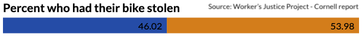
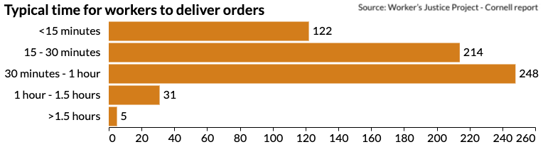

Food couriers are classified according to the percentage of orders they accept, whether those orders are delivered on time and how customers rate them, Solano said. Workers who do better tend to get more and higher paid orders. Those who perform "poorly" in the eyes of a platform can even be banned from using specific apps. In prioritizing speed over almost anything else, this situation can push deliveristas into extremely dangerous situations on two wheels, according to cycling safety advocates like Kevin Daloia.
"It is simple. To break down the time barrier means they will make more money," Daloia said. "But it is a physical job, so when they finish their 8 to 10 hour shifts, they are tired when they come home and unfortunately, that tends to be the time [when] lots of them are hit and getting into crashes."

Roughly half of deliveristas have been involved in an accident or crash while doing a delivery, according to the WJP-Cornell study in which 500 food couriers were surveyed. At least twelve workers have been killed on their bikes so far this year, according to an unofficial count Solano shared, compared to nine last year and seven in 2020.
"During rush hours, it is dangerous and it can be disastrous to drive on the street," Solano said. "In the bicycle lane, there are people with scooters, motorcycles, people crossing, etc. and there are more accidents."
"The fault [when a crash happens] can also be ours," he added. "The car wants to pass and so do you - and it hits you. Road stress affects both parties, both the delivery person and the driver."
Solano added that medical expenses come from the workers' own pockets.

In order to create awareness of the risks and to help injured deliveristas who need to rush to the hospital leaving their bikes behind, Solano and other co-workers created in the end of 2020 a Facebook page for food couriers to post announcements about numerous bike thefts, accidents, campaigns for free helmets and funerals. A total of 60 traffic accidents were also reported in the Facebook group.
In roughly a year and a half, 330 thefts have been reported on their page, "El Diario de los Deliveryboys en la Gran Manzana" — which translates to "The Diary of the Deliveryboys in the Big Apple" in English — with a significant increase over the last months.
54% of the respondents to the WJP-Cornell survey reported having experienced bike theft. About 30% of them said to have also been physically assaulted during the robbery.
2. The Tool
Ana Flores, whose real name has been changed to preserve her identity, moved from Mexico to the USA in 2019 as an asylum seeker. On July 21, she was buying bread and butter in Queens after a full day delivering food when her scooter was stolen. Flores said it took her about 7 minutes to pay at Target and get out again to the street. Her motorcycle was already gone.
Flores, who typically works for UberEats, doesn't know when she will be able to get back to work. She doesn't have a lot of hope that the NYPD will be able to recover the scooter she is still paying for in installments. "This happens daily, it is not an isolated case," she said. "The robbery has become so widespread, there is no control."
Usually late at night, some food delivery workers are ambushed by robbers with knives or guns, or brutally beaten up while their $2,000 electric bikes get stolen, as The Verge has reported. Because of this danger, some bikers have been patrolling Willis Avenue Bridge, which connects Manhattan and the Bronx, for months in order to help other workers cross the bridge safely.
Even when deliveries are completed safely, it is common for workers to face threatening, discriminatory and even violent treatment from customers, who also have the ability to affect their earnings by tipping less, giving them low ratings or filing a report to delivery companies if they are dissatisfied with the delivery. Reports like these could result in the delivery worker being immediately terminated with the apps they work for.
"In most cases, they are forced to accept the harassment because they do not want the restaurant or customers filing a complaint against them," explained Andrew Wolf, a professor of sociology at the City University of New York who has studied the app-based food delivery industry.

Flores said that she has encountered naked customers at least twice while working for UberEats. She said she complained, only to get reported and have her account temporarily deactivated. "I won't let a client disrespect me just to have a good score," she said.
Sergio has also encountered clients high on drugs. He also said some customers are aggressive if the delivery worker arrives late, even if the reason for their delay was related to the restaurants' capacity to dispatch all their orders on time.
3. The Future
Food couriers have also been advocating for more protections, both in terms of basic working rights and infrastructure changes, like better access to protected lanes that could help save their lives.
Last year, NYC approved a legislation package that would allow food delivery workers to have restroom access at partnering restaurants starting in 2023, something many of them say is still not happening now. The new legislation would also establish a minimum payment per trip and make apps disclose their tipping policies.
Flores said having access to a restroom is doubly crucial for women, especially when they are on duty and have their monthly period - an extra challenge in a predominantly male profession, where only 4% of women working as delivery workers, according to the WJP-Cornell study. Just the other day, Flores said, a Pizza Hut didn't allow her to use their bathroom.
"You are away from home, you drink water and sometimes you just need to go somewhere and wash your face and freshen up," she said. "There comes a time when you get dizzy from going up, down stairs, taking off and putting on your helmet, etc."
Former mayor Bill de Blasio has promised to install 30 miles of protected bike lanes each year as part of Vision Zero, a citywide initiative to eliminate death and serious injuries from traffic incidents.
This measure could be critical, given that between 2014 and 2019, 90% of fatalities on bikes happened on streets without bike lanes, according to the NYC Department of Transportation.
"Bicycle lanes create better conditions for drivers, bicyclists and pedestrians", said Shawn Garcia, the Bronx and Uptown organizer for the non-profit Transportation Alternatives. "And for delivery workers is a different conversation because we are not just talking about recreational use but about something tied to someone's livelihood."
The city has been slow to implement this solution, and advocates and scholars report that while protected lanes have grown in the last years in specific areas in Manhattan and Queens, boroughs like the Bronx — where a significant number of food delivery drivers live— continue to be neglected.
Only 6% of New York City’s on-street protected bike lanes are in the Bronx, compared to 75% in Manhattan and Queens, according to DOT data, even though roughly an equal percentage of residents in every borough ride bikes. Central Harlem is also the area with the least amount of bike infrastructure of all Manhattan.
"We want to see more because if we don't have a bike lane, we would get into the bus lane even though we know it's not allowed," Solano said. He added that being in the bus lane both raises the risk of being hit by a car and of receiving a ticket.
Delivery has become a part of the American lifestyle, even for items that are small or trivial. But those who bring these items often do so with few protections and low pay in a physically demanding job.
"Not only do we bring food to those who need it, complete a route, invest in energy, gasoline, a telephone, etc. but we are also risking our lives," Flores said. "And all that for two or three dollars... Of course, there are some six and seven-dollar races, but the system overall is very unfair."